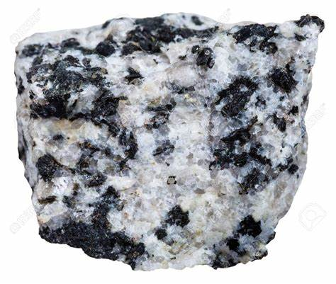
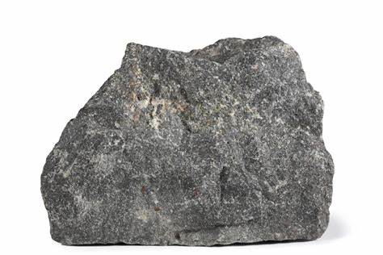
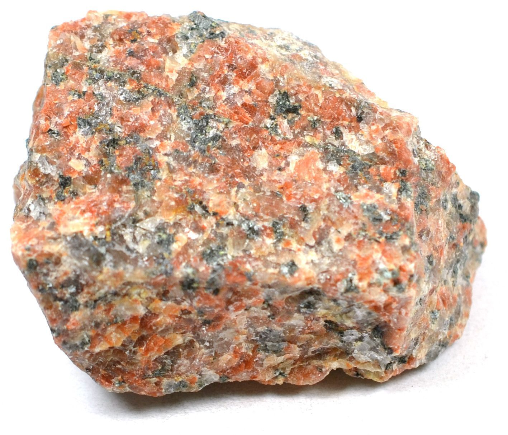
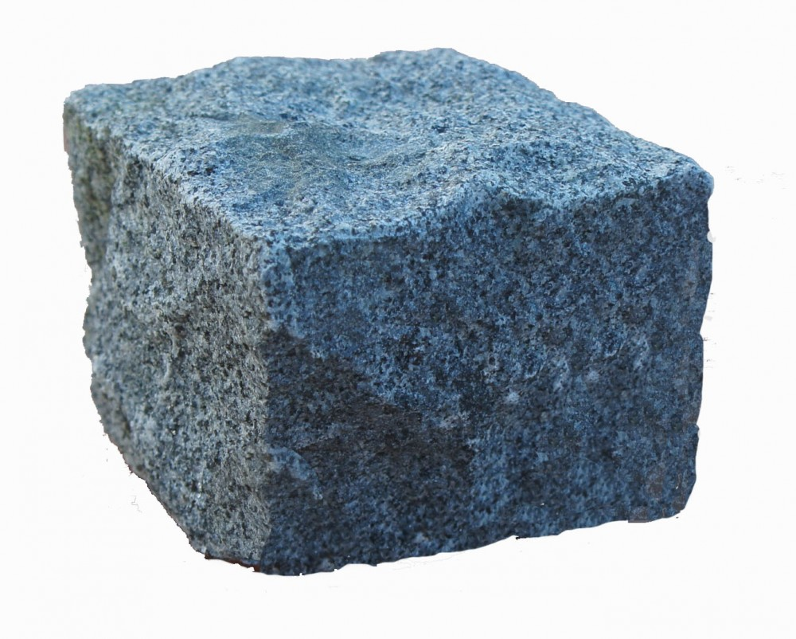
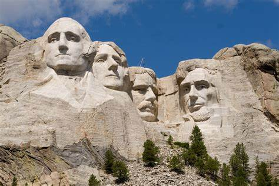

Granite: The Ancient Building Block of Earth

Chemical Composition: Primarily quartz, feldspar (plagioclase and alkali feldspar), and mica (biotite or muscovite)
Color: Pink, white, grey, black, or red depending on the mineral composition
Hardness: 6 - 7 on the Mohs scale
Crystal System: Granular phaneritic texture (igneous rock)
Localities: Found worldwide; notable regions include Brazil, India, China, South Africa, and the United States
Common Uses: Construction materials (buildings, monuments, countertops), sculptures, paving stones
Granite is one of the most widespread and extensively used rocks in human history. This durable, granular rock is an intrusive igneous formation, meaning it crystallizes from molten magma deep within the Earth's crust. Granite is primarily composed of three minerals: quartz, feldspar, and mica, which give it a distinctive appearance and make it one of the hardest materials found naturally.
Granite has been valued since antiquity for its strength, beauty, and resistance to weathering, making it a popular choice in architecture and construction. Its name is derived from the Latin word "granum," meaning grain, in reference to its coarse-grained structure. Over millennia, it has been used to build some of the most famous monuments and structures across various civilizations.
Formation and Types of Granite
Granite forms as molten magma cools slowly beneath the Earth's surface, allowing large crystals to develop. This process occurs over millions of years, often in tectonically active areas where plates converge. Granite is commonly found in large mountain ranges and is often exposed at the Earth's surface through uplift and erosion.
Key Types of Granite
White Granite
Dominated by feldspar and quartz, this variety is commonly found in Europe and parts of North America. It is popular for kitchen countertops due to its clean, modern look.
Black Granite (Gabbro)
Despite being called "granite," black granite is technically a gabbro. It is composed mainly of plagioclase and pyroxene, offering a striking dark appearance ideal for monuments and gravestones.
Pink Granite
This variation is enriched with potassium feldspar, giving it a distinctive pink hue. Pink granite is commonly found in Brazil and parts of India, often used in decorative architecture.
Blue Granite
With a mix of quartz and feldspar, this rare type of granite has an attractive bluish tint. It's primarily sourced from quarries in Norway and South Africa.
Structure and Properties of Granite
Granite's structure is phaneritic, meaning its minerals are large enough to be distinguished by the naked eye. This rock is renowned for its durability, hardness, and resistance to abrasion, which makes it suitable for a wide variety of applications.
- Hardness: Granite has a hardness of 6 to 7 on the Mohs scale, making it a strong and long-lasting material.
- Color Variations: The color of granite depends on the proportions of its constituent minerals. Quartz contributes to its translucence and hardness, feldspar gives it color, and mica adds sparkle.
- Luster and Texture: Granite generally has a shiny, polished surface, though it can also be honed for a matte finish. Its texture is granular due to its interlocking crystals.
- Porosity: Granite is relatively low in porosity but can absorb liquids over time if not sealed properly, particularly when used as a countertop material.
Uses of Granite
Granite has been a cornerstone of construction and artistry for centuries. Its durability, combined with aesthetic appeal, makes it suitable for a wide range of purposes.
1. Construction Material
Granite is a key material in construction, used in both structural and decorative elements. Its strength allows it to serve as a foundation for buildings, bridges, and tunnels, while its aesthetic qualities make it popular for facades, floors, and columns.
Historical Examples:
- The Pyramids of Giza contain large quantities of granite, especially in the King's Chamber.
- Stonehenge features massive granite blocks as part of its prehistoric arrangement.
- The base of the Statue of Liberty is made from granite sourced from Maine, USA.
2. Monuments and Sculpture
Granite's resistance to weathering makes it ideal for outdoor monuments and sculptures. Its hardness allows it to maintain sharp details for centuries.
Famous Monuments:
- Mount Rushmore in the United States features granite-carved likenesses of four American presidents.
- The granite columns of the Roman Pantheon, which have withstood centuries of environmental exposure.
- The Scottish National War Memorial is a granite tribute to soldiers lost in World War I.
3. Countertops and Interiors
In modern homes, granite is a preferred material for kitchen countertops due to its durability and heat resistance. Its polished surface adds elegance to interiors, and it can be honed for more rustic finishes.
4. Paving Stones
Granite cobblestones have been used to pave streets for centuries, particularly in European cities. Their durability ensures that these streets can withstand traffic for hundreds of years.
History of Granite Use
Granite has been a material of choice for civilizations across the globe due to its availability, strength, and aesthetic appeal. From ancient Egypt to modern times, the history of granite is intertwined with monumental architecture and artistry.
- Ancient Egypt: Granite was extensively quarried from Aswan and used in obelisks, pyramids, and temples. The Pharaohs valued granite not only for its durability but also for its ability to be polished to a high gloss.
- Roman Empire: The Romans used granite extensively in their infrastructure, such as in the construction of aqueducts, temples, and roads. Granite was often imported from quarries in Egypt and transported across the empire.
- Renaissance and Beyond: In Europe, granite gained popularity during the Renaissance as a sculpting material for statues, fountains, and grand public buildings. Granite's use continued through the Industrial Revolution and into modern times, where it remains a staple in both public and private projects.
Famous Granite Quarries and Locations
Granite is found worldwide, but some regions are particularly renowned for the quality and quantity of their granite:
- Aswan, Egypt: One of the oldest and most famous granite quarries, used by the ancient Egyptians for their monumental architecture.
- Mount Airy, North Carolina, USA: Known as the "Granite City," this quarry is one of the largest open-faced granite quarries in the world.
- Madura, India: India is one of the largest exporters of granite, with quarries in regions like Tamil Nadu producing fine-quality material used globally.
- Vermont, USA: Famous for its Barre Granite, often used for statues and monuments due to its fine grain and consistent color.
Care and Maintenance of Granite
Granite is a resilient material, but proper care ensures its longevity, especially when used in kitchens or other high-traffic areas:
- Sealing: Granite is naturally porous, so applying a sealant prevents staining from liquids and oils.
- Cleaning: Clean with mild soap and water. Avoid acidic cleaners like vinegar or lemon juice, as these can etch the stone's surface.
- Scratch Prevention: Although granite is hard, sharp objects can still scratch its surface. Using cutting boards and trivets is recommended.
Enhancements and Treatments
Although granite is naturally beautiful, certain treatments can enhance its appearance or longevity:
- Polishing: Granite is often polished to a high gloss, which not only enhances its beauty but also seals its pores.
- Honing: A matte finish that gives granite a softer, more contemporary look.
- Thermal Finishing: In this process, the granite surface is heated and then rapidly cooled, creating a rough texture suitable for outdoor use.
Conclusion
Granite, with its unique combination of durability, beauty, and versatility, has secured its place as one of the most valued building materials in human history. Its use in everything from ancient monuments to modern countertops underscores its timeless appeal. As one of Earth's oldest and most trusted stones, granite continues to inspire architects, designers, and artists alike.